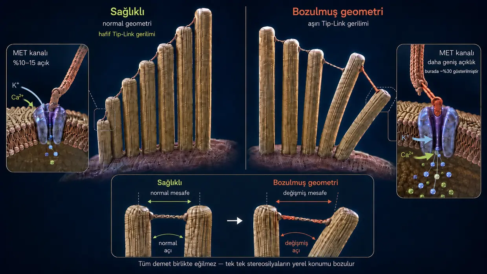
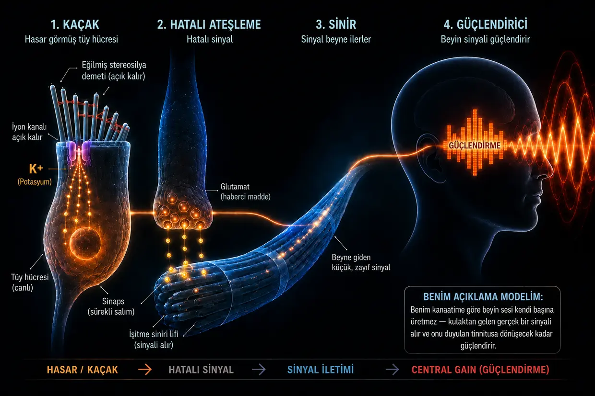

Gürültüye bağlı tinnitus — kulak sınırına dayandığında
Son güncelleme: Haziran 2026
Burada anlattıklarım benim kendi açıklama modelim. Yıllar süren araştırmalarıma ve iki kez atlattığım kendi tinnitusuma dayanıyor — tıbbi bir standart değil.
Ben de o zamanlar bu korkunç hastalığı yaşayanlardan biriydim — biyografimde daha önce anlattığım gibi.
Öylesine çaresizdim ki kendime yemin etmiştim: Ya tinnitus gider, ya ben. (Elbette bunu kelimesi kelimesine kastetmiyordum; ama gerçekten devasa bir baskı altındaydım.)
O dönemde yaşadığım şey çoğunlukla sol kulağımda yüksek sesli, tiz ve delici, yüksek frekanslı bir sesti; çok geri planda bir hışırtı da buna eşlik ediyordu. O ana kadar hayal edebileceğim en korkunç şey buydu. Yetmezmiş gibi kısa bir süre sonra sağ kulağım da eklendi — hem de doktorların benim için tamamen yanlış olduğu ortaya çıkan talimatlarının doğrudan sonucu olarak.
Bu “talimatların” özü, tinnitus sesini başka seslerle örtmekti — örneğin kulaklıkla daha yüksek ses düzeyinde müzik dinlemek ya da arka planda sürekli bir hışırtı sesi çalmak. Ama gerçekte bunun anlamı, zaten ağır biçimde aşırı yüklenmiş kulaklarımı daha da fazla ses uyaranına maruz bırakmaktı. Geriye dönüp baktığımda bunun en büyük hatalardan biri olduğunu görüyorum; çünkü tam da bu yüzden durumum kötüleşti ve ikinci kulağım da işin içine çekildi.
Bu ses, sinirlerime, uykuma ve bütün hayatıma yönelik kesintisiz bir saldırı gibiydi. Doktorlar bununla yaşamayı öğrenmem gerektiğini söylüyordu. İnternette birbirleriyle çelişen terapiler buluyordum. Bana göre her şey çaresizlik kokuyordu.
Ben de kendime yemin ettim: Hepsi bu olamaz. Deli gibi araştırmaya, çalışmaları okumaya, deneyim yazılarını karşılaştırmaya ve kendi anlayışımı oluşturmaya başladım. Yavaş yavaş net bir mekanizma ortaya çıktı — bana mantıklı gelen ve daha sonra kendi deneyimlerimde de doğrulanan bir tablo.
Bugün şunu söyleyebilirim: Gürültüye bağlı tinnitus bir gizem değil. Kulağın aşırı yüklenmesinin sonucu. Orada neler olduğunu anlayınca, sesin neden var olduğunu ve kendin neler yapabileceğini de anlıyorsun.
Kısa özet 60 saniyede oku — en önemli noktalar tek bakışta
Aşırı yüksek ses düzeyinde (örneğin diskoda) pompalar artık yetişemez. Enerji tüketimi (ATP) patlar, hücre tükettiği ATP'yi artık yerine koyamaz ve laktik asidin oluştuğu, hücre ortamının asitleştiği kirli bir acil moda geçer — sprintte kasın tükenip kilitlenmesine benzeyen aşağı yönlü bir sarmal. Pompalar yetişemeyince küçücük stereosilyaların içinde kalsiyum birikir. Bu fazla kalsiyum, stereosilyanın içindeki yapı iplikçikleri arasında bulunan “yapıştırıcıyı” — crosslinker adı verilen çapraz bağlayıcı proteinleri — yiyip bitiren parçalayıcı enzimleri, yani kalpainleri harekete geçirir. Bu yapıştırıcı olmadan stereosilya sertliğini kaybeder ve biçimi bozulur. Bunun sonucunda ucundaki iyon kanalı, aralık bırakılmış bir pencere gibi sürekli gereğinden fazla açık kalır. Bu kalıcı kaçaktan hücreye durmaksızın potasyum akar ve bütün hücreyi sürekli elektriksel gerilim altında tutar. Bu gerilim de tüy hücresinin daha aşağısındaki başka kanalları açar; kalsiyum sinapsa damlar ve orada glutamatın işitme sinirine kesintisiz biçimde salınmasını tetikler. Beyin bu hafif ama sürekli hatalı sinyali alır, o frekans aralığında normal girdinin eksik olduğunu fark eder ve kendi iç ön yükseltecini — Central Gain'i — iyice açar. Bu hafif hatalı sinyal ancak böyle güçlendirilince bilinçli olarak duyulan sese, yani tinnitusa dönüşür.
İyi haber şu: Hücre canlı kaldığı sürece onarım için gereken yapım planına ve yeteneğe sahiptir. Bunun için enerjiye, yapı malzemesine ve dinlenmeye ihtiyaç duyar.
Kulakta gerçekte ne oluyor? Normal işitme fizyolojisi nasıl işliyor?
Derine dalmadan önce kısa bir kavram açıklaması yapalım ki metnin tamamında aynı şeyi anlayalım: İç kulakta tüy hücreleri bulunur — bunlar işitmenin asıl duyu hücreleridir. Her bir tüy hücresinin yüzeyinde parmak biçimli küçücük uzantılardan oluşan bir demet vardır: stereosilyalar. Kokleadaki (kulak salyangozundaki) konumuna bağlı olarak her tüy hücresinin üzerinde, org boruları gibi kısadan uzuna doğru sıralanmış yaklaşık 50 ila 300 stereosilya bulunur. Bunların her biri, aktin proteinlerinden oluşan kendi iç destek iskeletine sahiptir. Gündelik dilde ve araştırmalarda bu stereosilyalara çoğu zaman kısaca “tüyler” ya da “duyu tüyleri” denir — ben de bu sayfada bu ifadeleri böyle kullanıyorum. Önemli olan şu: “Tüy” dediğimde her zaman tüy hücresinin üzerindeki stereosilyaları kastediyorum; tüy hücresinin kendisini değil.
Normalde işitme, son derece hassas bir zincirleme tepkiyle işler:
Uyaran: Bir ses uyaranı tüy hücrelerinin ince tüylerine — stereosilyalara — çarpar ve onları yana doğru büker.
Mekanik çekiş (tip-linkler): Bu tüylerin uçları son derece ince protein iplikleriyle — tip-linklerle, yani uç bağlantılarıyla — birbirine bağlı olduğu için bükülme gerilim oluşturur. Bu iplikler mekanik bir çekme halatı gibi çalışır: Uçtaki iyon kanalını fiziksel olarak açarlar — tıpkı küvet tıpasını çekmek gibi.
İçeri akış: İç kulak potasyumdan zengin bir sıvıyla dolu olduğu için, açılan bu kanaldan stereosilyanın içine hemen potasyum (K⁺), az miktarda da kalsiyum akar.
Etkinleşme: Bu potasyum akışı tüy hücresinin elektriksel gerilimini değiştirir; hücre depolarize olur. Bunun ardından, stereosilyaların içinde değil, tüy hücresinin daha aşağısındaki hücre gövdesinde bulunan kalsiyum kanalları açılır.
Sinyal: Nörotransmiterlerin salınmasını ancak içeri giren bu kalsiyum sağlar; sinyal de işitme siniri üzerinden beyne ateşlenir.
Sıfırlama: Ardından hem stereosilyalardaki hem de tüy hücresinin gövdesindeki özelleşmiş taşıyıcılar, fazla potasyum ve kalsiyumu ATP — yani hücre enerjisi — kullanarak yeniden dışarı pompalar. Böylece hücre sakinleşebilir.
Bu sistem, nefes alıp verme ritmi gibi sürekli küçük bir “açılma ve kapanma” yaşanacak şekilde kurulmuştur. Burada belirleyici nokta şudur: Stereosilyanın ucundaki kanal dinlenim hâlinde tamamen kapalı değildir; her zaman çok az açık kalır. Hücrenin en hafif sese bile anında tepki verebilmesi için bu normal ve gereklidir. Stereosilya dik durduğu sürece açıklık küçük ve kontrollü kalır. Ama kalıcı biçimde yana eğilirse kanal gereğinden fazla açık kalır — sorun da tam burada başlar.
Şimdi bu sistem aşırı yüklendiğinde neler olduğuna geçmeden önce önemli bir düşünce: Gürültü travmasının ardından kronik tinnitus oluştuğunda birçok kişi — ve birçok doktor da bu izlenimi veriyor — kulaktaki tüy hücrelerinin geri dönülmez biçimde yok olduğunu, beynin de artık sesi hafızadan kendi başına ürettiğini düşünüyor. Benim kanaatime göre bu açıklama eksik kalıyor. Çünkü ölü bir tüy hücresi artık sinyal göndermez — sessizdir. Ses tam da VAR olduğu için hücre hâlâ canlı olmalı. Tinnitus ölü bir hücrenin değil, hayatta kalma mücadelesi veren bir hücrenin işaretidir. Gürültü hasarında bazı tüy hücreleri gerçekten bütünüyle yok olmuş olabilir; ama benim anlayışıma göre bunların tinnitus sürecinde rolü yoktur, çünkü artık hiçbir sinyal göndermezler. Ses, hâlâ orada olan ve savaşan hücrelerden gelir — bu hücreler enerjiye bağlı bir işlev kaybında takılı kalmıştır.
Şimdi bu işlev kaybını ayrıntılı ve adım adım açıklayacağım. Daha kısa okumak isteyenler sayfanın üst kısmındaki kısa özete bakabilir.
Gürültü aşırı şiddetlendiğinde (Diskoda ne olur?)
Ama kulak tek seferde ya da sürekli olarak (kronik biçimde) fazla sese maruz kaldığında denge altüst olur ve mekanik sistem çöker. Her disko gecesi buna yol açmaz — ama gürültüye bağlı tinnitus oluşuyorsa benim kanaatime göre arkasındaki mekanizma tam olarak şudur: enerji kaybı, mekanik çöküş ve kimyasal taşkından oluşan bir zincir. Birbirini körükleyen ve sonunda kısır döngüye dönüşen üç süreç.
- 01Enerji çöküşü
- 02Mekanik çöküş
- 03Acil kurtarma ve hamster çarkı
1. aşama: Enerji çöküşü
Normal işitme sürecini hatırlayalım: Her ses uyaranında iyonlar hücrenin içine akar; ardından ATP harcanarak yeniden dışarı pompalanmaları gerekir. Normal ses düzeyinde bu rahat bir ritimdir — hücre iyonları rahat rahat dışarı pompalar ve bol bol enerjiye sahiptir. Ama diskoda 100 desibellik ses dalgaları, duyu tüylerine durmaksızın ve acımasız bir şiddetle çarpar. Kanallar bir anda ardına kadar açılır, iyonlar akın akın içeri dolar ve pompalar artık yetişemez. Enerji tüketimi patlar.
Tüy hücreleri artık yerine koyabildiklerinden çok daha fazla enerji yakar. Hücrenin normal enerji santralleri (mitokondriler) sınırda çalışır. Hücre bu devasa enerji açlığını bir şekilde giderebilmek için daha hızlı ama kirli bir acil yola başvurur: anaerobik glikoliz. Bu acil mod enerjiyi hemen sağlar; fakat atık ürün olarak laktik asit (laktat) üretir ve hücre ortamını asidik hâle getirir. Enerji üretiminden sorumlu enzimler asit yüzünden gittikçe daha verimsiz çalışır — aşağı yönlü bir sarmal başlar.
Spordan bildiğimiz örnek: Bunu ağırlık antrenmanından ya da sprintten herkes bilir. Bir süre sonra kas “yanmaya” başlar (laktat artışı) ve en sonunda düpedüz kilitlenir — klasik kas tükenmesi. İç kulakta da aynı kimyasal çöküş yaşanır; yalnız bunu ağrı olarak değil, işlev kaybı olarak hissedersin.
Asıl tehlike de tam burada pusuda bekler: Pompalar yetişemeyince stereosilyaların içinde kalsiyum birikir. Az miktardaki kalsiyum normaldir ve gereklidir — ama fazlası yıkıcıya dönüşür. Neyi yıktığını ve bunun neden böylesine ağır bir sonuç doğurduğunu 2. aşama gösteriyor.
2. aşama: Mekanik çöküş
Kalsiyumun şimdi neler yaptığını anlamak için bir stereosilyanın iç yapısının nasıl kurulduğunu kısaca bilmek gerekir: Yüzlerce paralel aktin iplikçiğinden oluşur — bunu bir demet kuru spagetti çubuğu gibi düşünebilirsin. Bu iplikçikler, crosslinker adı verilen kısa protein köprüleriyle birbirine yapıştırılır. Crosslinker proteinleri tüyün asıl yapı mühendisidir — demeti o kadar sıkı bir arada tutarlar ki yapı, bunun için enerji harcamadan kendi kendine çelik bir boru gibi dimdik ve sert durur. Crosslinker proteinleri sağlam kaldığı sürece duyu tüyü de dik durur.
1. aşamadaki enerji kaybıyla birlikte şimdi yıkıcı bir zincirleme tepkime başlar:
Pompalar yükün altında ezilir (kalsiyum taşkını): Normal işitme sürecinde gördüğümüz gibi potasyumla birlikte stereosilyanın içine her zaman az miktarda kalsiyum da girer. Normal çalışmada bu sorun değildir; çünkü stereosilyanın zarında, bu kalsiyumu hemen yeniden dışarı atan özel kalsiyum pompaları bulunur. Fakat bu pompaların da ATP'ye ihtiyacı vardır. Diskodaki akut aşırı yüklenmede enerji bunun için kesinlikle yetmez — pompalar düpedüz yükün altında ezilir. Sonuç: Normalde sorun yaratmayacak kadar az kalsiyum bile artık tüyün içinde birikir. Asıl yapısal çöküşü tetikleyen de tam olarak bu aşırı kalsiyum birikimidir.
Ve şimdi asıl yapısal çöküş geliyor: Biriken kalsiyum, kalpainler denen özel parçalayıcı enzimleri etkinleştirir. Bu enzimler demin tanıdığımız crosslinker proteinlerini — yani demeti bir arada tutan harcı — yer bitirir.
Bunun neden böylesine yıkıcı olduğunu anlamak için basit bir benzetme yeterli:
Eline tek bir kuru spagetti çubuğu al — onu kolayca büküp kırabilirsin. Şimdi yüz spagetti çubuğunu süper yapıştırıcıyla birbirine yapıştırıp tek bir sağlam çubuk hâline getir — elinde birdenbire kolay kolay bükülmeyen sert bir boru olur. Tek tek iplikçikler zayıftır; ama birbirine yapıştıklarında güçlüdür.
Stereosilya da tam olarak böyle çalışır: Onu sertleştiren yalnızca aktin iplikçikleri değil, bu iplikçiklerin crosslinker proteinleriyle birbirine bağlanmış hâlidir.
Kalpainler şimdi bu yapıştırıcıyı yer bitirince tam tersi olur: Sert boru yeniden tek tek, gevşek iplikçiklere dönüşür. Aktin iplikçikleri hâlâ stereosilyanın içindedir — ortadan kaybolmuş değildir; ama aralarındaki bağlantılar olmadan artık birlikte duramazlar. Duyu tüyü sertliğini kaybeder. Bir parçası koptuğu için değil, iç bütünlüğü kalmadığı için.
Kişi hâlâ diskodaysa durum çoğu zaman daha da beterleşir: Artık korumasız ve tek başına kalmış iplikçikler, devam eden ses basıncı altında zayıf noktalarından gerçekten kırılabilir — tıpkı komşularının desteği olmadan yük altında bükülen tek tek spagettiler gibi. Bir iplikçik kırıldığında yük komşu iplikçiklere biner; onlar da kırılabilir. Zincirleme bir kırılma tehlikesi baş gösterir.
Sonuç: İç desteğini yitiren duyu tüyü artık dik duramaz — biçimi bozulur. Bunun ne anlama geldiğini gözünde canlandırmak için şu görüntü yardımcı olur: Stereosilyalar farklı uzunluklarda ve yan yana sıralar hâlinde durur; uçlarından ince ipliklerle, yani tip-linklerle birbirlerine bağlanırlar. Sağlıklı durumda bütün tüyler mum gibi dimdiktir — aralarındaki ipliklerin gerilimi tam olması gerektiği gibidir ve kanal dinlenim hâlinde yalnızca çok az açıktır. Bir ses dalgası geldiğinde tüyler kısa süreliğine yana eğilir, iplikler gerilir, kanal açılır; dalga geçer geçmez eski konumlarına döner ve her şey gevşer. Net bir aç-kapa.
Şimdi aynı tüylerin, ortada hiçbir dalga YOKKEN bile dik durmayıp yana sarktığını düşün. Aralarındaki iplikler artık sürekli olarak olması gerekenden farklı bir gerilim altındadır. Üstelik zarın biçimi de bozulmuştur. Bu yüzden kanal dinlenim hâlindeyken bile gereğinden fazla açık durur. O andan itibaren, müzik çoktan susmuş olsa da potasyum ve kalsiyum hücrenin içine sürekli ve kontrolsüz biçimde akar. Kalıcı kaçak oluşmuştur — tinnitusun zemini de onunla birlikte. Ortada ses yokken hücre sinyal ateşler; çünkü geometri artık tutmuyor.

Çoğu kişide tinnitus gürültü olayından oldukça kısa süre sonra — birkaç dakika ile birkaç saat içinde — başlar. Ama sesin ancak saatler, hatta günler sonra ortaya çıktığı vakalar da vardır. Bu başlangıç zamanının kişiden kişiye neden böylesine değişebildiğini ve kulaktaki belirli yapıların burada nasıl bir rol oynadığını SSS bölümünde ayrıntılı biçimde açıklıyorum.
3. aşama: Acil kurtarma — ve neden yetmediği
Hücre hasarı fark eder ve hemen bir hayatta kalma mekanizmasını devreye sokar: Hücre gövdesinde acil durum stoku olarak zaten hazır bekleyen özel onarım proteinleri (XIRP2 gibi) hasarlı noktalara hızla koşar. İplikçikler — yani 2. aşamadaki spagettiler — kırılmışsa, bu onarım proteinleri kırık noktaların çevresine moleküler zırhlı tamir bandı gibi sarılır ve iplikçiklerin tamamen kopmasını ve zincirleme kırılmanın kontrolden çıkmasını önler. Bu, 1. fazdır: akut acil stabilizasyon. Süreç hızlı ilerler (dakikalar ile saatler), çünkü XIRP2'nin önce üretilmesi gerekmez — yalnızca hasarlı noktaya yönlendirilir. Stereosilya hayatta kalır; ama iskelet yumuşak ve dengesiz kalır. Çünkü XIRP2, filamentlerin arasındaki eksik crosslinker proteinlerinin yerini tutamaz.
Şimdi mutlaka 2. fazın (aktif yeniden yapılanmanın) başlaması gerekir — hem de iki ayrı şantiyede: Birincisi, XIRP2 yamalarının yerini taze ve sağlam aktin almalıdır. İkincisi, demetin yeniden tek parça, sağlam bir çubuk hâline gelebilmesi için yeni crosslinker proteinleri üretilip filamentlerin arasına yerleştirilmelidir. İkisi de devasa miktarda ATP harcar, ikisi de hücre gövdesinden malzeme ister; üstelik stereosilyaların kendi enerji santralleri (mitokondrileri) yoktur — aşağıdaki tüy hücresi gövdesinden gelen enerjiye tamamen bağımlıdırlar. Fakat yetişkinlerin çoğunda kronik tuzak tam da burada kapanır. Nedenini bir sonraki bölüm anlatıyor.
-
01Enerji çöküşü
ATP tüketimi patlar, hücre acil moda geçer. Laktik asit birikir, hücre ortamı asidikleşir.
-
02Mekanik çöküş
Fazla kalsiyum kalpainleri etkinleştirir; kalpainler de stereosilyadaki iplikçiklerin arasındaki “yapıştırıcıyı” yer bitirir. Tüy eğilir — kaçak oluşur.
-
03Acil kurtarma ve hamster çarkı
XIRP2 kırık noktaları stabilize eder. Hücre akut durumda hayatta kalır — ama asıl onarım için enerji yetmez.
Hamster çarkı tuzağı: Onarım neden bir türlü gerçekleşmiyor?
Şimdi akut olaydan kronik soruna geçişteki belirleyici noktaya geliyoruz.
Gürültü biter bitmez toparlanma başlar: Hücre hemen yeniden ATP üretmeye koyulur, pompalar da adım adım normal çalışma düzenine geri döner. Yenilenmenin tamamı — asit yükünün azaltılması, onarım çalışmaları ve enerji rezervlerinin yeniden doldurulması — zaman içinde ve özellikle uykuda gerçekleşir. Yani vücut ortalığı toparlar: Diskodaki devasa yüklenme ve artık oluşmuş kaçak yüzünden akut biçimde biriken iyon fazlası yavaş yavaş dışarı atılır. Aşırı iyon zirvesi büyük ölçüde normale döner; bununla birlikte kalsiyum düzeyi de kritik eşiğin altına iner. Parçalayıcı enzimler (kalpainler) etkisizleşir, aktif yapısal hasar durur.
Peki kulak neden yine de iyileşmiyor?
Çünkü kalıcı kaçak hâlâ açık. Stereosilyalar eğik durmaya devam ediyor, iyon kanalı sürekli olarak gereğinden fazla açık kalıyor ve pompalar bu fazlalığı günün yirmi dört saati dışarı taşımak zorunda. Bunun onarımı tam olarak neden engellediğini şu görüntü anlatıyor:
Çatı–Ev–Bodrum ilkesi
Bu çıkmazı tek bakışta anlamak için tüy hücresini, tek bir elektrik sayacından (ATP) beslenen bir bina gibi düşün:
Çatı: Zayıflamış aktin iskeletine sahip, 1. fazın acil modunda takılı kalmış ince duyu tüyleri (stereosilyalar). Kaçak yukarıdadır; aslında onarım ekibinin de tam burada çalışması gerekir. Ama çatının kendi pompaları bunun yerine içeri giren potasyumu ve özellikle de tehlikeli kalsiyumu durmaksızın dışarı atmakla uğraşır. Çünkü kalsiyum burada yeniden kritik eşiğin üstüne çıkarsa parçalayıcı enzimlerin tekrar etkinleşip hasarı ağırlaştırma tehlikesi vardır.
Ev: Asıl büyük hücre gövdesi — ve hücrenin her bölgesi için ATP üreten enerji santrallerinin (mitokondrilerin) bulunduğu TEK yer. Bozuk çatıdan şimdi hiç durmadan fazla iyon akıyor.
Bodrum: Burada da iyon pompaları var. Sızıp aşağı ulaşan kalsiyumu, evi tamamen su basıp hücre ölmesin diye akıntıya karşı çaresizce yeniden dışarı küreklemek zorundalar.
Çatıdaki ve bodrumdaki pompalar, sırf binayı suya gömülmekten kurtarmak için eldeki enerjinin büyük bölümünü tüketir. Bu yüzden hücrenin, onarım işçilerini işe koyup aktin iskeletindeki hasarı giderecek hiçbir kaynağı kalmaz. Onarım sürekli ertelenir. Kaçak açık kalıyor. Pompalar didinip duruyor. Hamster çarkı dönüyor.
Hayatta kalma mücadelesinden sese: Tinnitus böyle oluşuyor

Artık kalıcı kaçağın var olduğunu ve hücrenin hamster çarkında sıkışıp kaldığını biliyoruz. Peki bütün bunlardan nasıl duyulabilir bir ses doğuyor? Sürekli içeri akan potasyum, tüy hücresinin tamamını sürekli bir elektriksel gerilim altında tutar (depolarize eder) — hücre hiçbir zaman dinlenim potansiyeline geri dönemez. Bu sürekli gerilim de tüy hücresinin daha alt kısmındaki voltaja duyarlı kalsiyum kanallarını açar; artık sinapsa durmadan az miktarda kalsiyum damlar. Bu kalsiyum, nörotransmiter glutamatın işitme sinirine düşük düzeyli ama kesintisiz biçimde salınmasını tetikler. Ortada hiçbir ses yokken beyin sürekli bir “ATEŞ!” sinyali alır ve bu kimyasal kısa devreyi işitilen bir sese çevirir.
Beyin bununla ne yapıyor: Neden değil, yükselteç
İşte bu noktada beyin sahneye çıkıyor. Ana akım tıp çoğu zaman beynin tinnitusu “öğrendiğini” ve artık sesi bütünüyle kendi başına ürettiğini ileri sürer. Benim kanaatime göre bu açıklama eksiktir. Beyin tinnitusu hiç yoktan yaratmaz. Son derece karmaşık bir işlemci olarak, kulaktan gelen sürekli ve hatalı glutamat kaçağına tepki verir.
Gürültü hasarı ve yana eğilmiş tüyler yüzünden gerçek ve temiz dış sinyaller (normal frekanslar) eksik olduğu için beyindeki işitme merkezi bir tür duyusal yoksunluğa girer. Beyin, evrimsel bir koruma mekanizması olarak buna tavizsiz biçimde karşılık verir: Tam da eksik kalan bu frekansların ön yükseltecini — yani “Central Gain”i — iyice açar. Vahşi doğada, kulak hasar görmüş olsa bile sinsice yaklaşan yırtıcının ayak sesini duyabilmek için bu hayati önemdeydi. Yani beyin, hasarlı tüy hücrelerinden gelen, aslında hafif olan kaçak akımını alıp devasa bir ekolayzırdan geçirir. Sinyali, bilinçli olarak tinnitus diye algıladığımız kulakları sağır eden bir sirene dönüştürene kadar yükseltir.
Yıkıcı maskeleme tuzağı: Beyaz gürültü uygulamaları neden yapılabilecek en kötü şeydir?
Maskeleme, kulağının elinde kalan tek onarım penceresini yakıp kül ediyor.
Benim deneyimime göre, tinnitusu yaşayan insanların — doktor tavsiyesiyle — yaptığı en ağır hata tam burada yatıyor. Klasik tavsiye şöyle: “Sesi beyaz gürültüyle, doğa sesleriyle ya da hafif müzikle örtün.” İlk bakışta mantıklı geliyor ve kısa vadede gerçekten rahatlatıyor. Ama benim anlayışıma göre biyokimyasal açıdan son derece yıkıcı.
Şunu net biçimde anlamak gerekir: Tüyler hâlâ canlı ve etkin — ama yana eğilmiş durumdalar. Hücre aslında her dinlenme anını (özellikle uykuyu), elinde kalan son enerjiyle yapıyı onarmak ve yeniden dikleşmek için kullanmaya çalışıyor.
Ama kulaklarını yapay sesle uyarmaya devam edersen, hasarlı stereosilyaları yeniden çalışma moduna zorlarsın. Tekrar sese tepki vermeleri ve iyon pompalamaları gerekir; böylece tam da 2. faza — asıl onarıma — ayırdıkları enerjiyi harcarlar. Bir de ikinci sorun var: Her ses dalgası, hasarlı demetteki aktin filamentlerini birbirine göre kaydırır. Yeni yerleştirilmiş crosslinker proteinleri, daha doğru dürüst bağlanamadan bu sürekli hareket yüzünden yeniden yerinden sökülür — tıpkı biri merdiveni sallarken yerine takmaya çalıştığın bir basamak gibi.
Çatı–Ev–Bodrum benzetmesiyle anlatırsak: Yapay ses, zaten yumuşamış çatıyı mekanik olarak kamçılar. Kaçak gereğinden fazla açık kalır. Bodrumdaki pompalar günün yirmi dört saati kapasitesinin son sınırında çalışmak zorunda kalır. Çatıdaki onarım işçilerine sıfır enerji kalır.
Bu, benim bizzat yaşadığım ve sayısız insanın da anlattığı bir olguyu açıklıyor: Tinnitusu gece hışırtıyla örtüyorsun, kısa süreliğine daha iyi hissediyorsun; ama ertesi sabah tinnitus, önceki akşama göre daha saldırgan ve daha yüksek. Nedeni şu: Hücre gece vardiyasını — elindeki tek onarım penceresini — yapay sesi işlemek uğruna yakıp bitirdi.
Bu konuda açık konuşayım: Bazı insanların maskelemeyle neden gayet iyi yaşayabildiğini kesinlikle anlıyorum. Tinnitus insanı psikolojik olarak uçuruma sürüklüyor ve uykuyu imkânsız kılıyorsa, sesi kısa süreliğine örtmek kelimenin tam anlamıyla hayat kurtarıcı olabilir — böyle bir durum yaşayan hiç kimseyi bundan vazgeçirmeye çalışmıyorum. Ama asıl yenilenme, yani tinnitusun gerçekten yeniden kaybolması söz konusu olduğunda, maskeleme benim anlayışıma göre ters etki yaratır. Dikkat çekmek istediğim ayrım tam olarak bu.
Umut: Onarım neden mümkün?
Bütün bu mekanizmalara rağmen belirleyici bir umut ışığı var: Hücre çekirdeği sağlam olduğu ve aktin iskeleti temelde hâlâ varlığını sürdürdüğü için hücre bu yapıyı onarabilir. Stereosilyalarda aktif bir aktin döngüsü vardır — aktin filamentleri sürekli parçalanır ve yeniden kurulur. Yani hücre kendi yapısını durmaksızın yeniler. 2. faz somut olarak şu anlama gelir: Filamentlerin kırık noktalarındaki XIRP2 yamalarının yerini taze aktin alır ve demet yeniden sağlam ve sert hâle gelene kadar filamentlerin arasına yeni crosslinker proteinleri yerleştirilir. Asıl soru, hücrenin onarım yapıp yapamayacağı değil. Asıl soru, mevcut koşullarda buna yetecek enerjiye ve yapı malzemesine sahip olup olmadığı ve ihtiyaç duyduğu dinlenmenin ona verilip verilmediği.
İç destek iskeleti ağır biçimde çökmüş olsa bile bu nihai hüküm değildir. Hücre yaşadığı sürece bu iskeleti yeniden kuracak yapım planına ve yeteneğe sahiptir — yeter ki hücre yeniden yeterli enerjiye (ATP'ye) ve yapı malzemesine ulaşsın, kimyasal stres de dursun.
İlginç olan şu: Tam da hücresel enerjiyi (ATP'yi) artırmaya dayanan bu ilke, ilaç araştırmalarında da izleniyor. Bu da benim açıklama modelimi destekliyor (ATP/ROS etkisi şimdiye kadar yalnızca hücre kültürlerinde gösterilmiş olsa da). AC102 adlı ilaç tam olarak bu mekanizmayı hedefliyor: Bir hayvan modelinde (Moğol gerbili) tinnitusa özgü bir davranış örüntüsü, tek doz AC102'nin ardından beş hafta içinde neredeyse tamamen geriledi. Sürenin sonunda 15 hayvandan yalnızca 1'i hâlâ etkilenmişti; plasebo grubundaysa hayvanların büyük bölümü etkilenmeye devam ediyordu. Bu, irkilme refleksi testiyle (GPIAS) ölçüldü — tinnitus için kabul gören davranışsal bir gösterge. İnsanlarda bununla ilgili klinik bir 2. faz çalışması şu anda sürüyor ve sonuçlarının 2026'da açıklanması bekleniyor (Kaynak sayfamda AC102 hakkındaki araştırmalar →). Düşük seviyeli lazer tedavisi de (fotobiyomodülasyon) bu temel enerji yaklaşımını hedefliyor.
Sonuç
Benim kanaatime göre gürültüye bağlı kronik tinnitusun fizyolojik açıdan gerçekte ne olduğu şudur: Enerjiye bağlı bir acil çalışma modunda sıkışıp kalmış canlı bir hücre. 2. faz için yeterli enerji olmadığı için hücrenin onarımı büyük ölçüde 1. fazda donup kalmıştır. Kulak “bozuk” değildir ve beyin bir fantom sinyali kendi kendine üretmez. Ses, gerçek ve periferik bir hayatta kalma mücadelesinin sonucudur; beyin onu yalnızca yükseltir.
Sesin kalıp kalmayacağı yalnızca hücrelerin kaçağı kapatmasına yardım edilip edilmediğine ve pompaların yeniden enerjiyle beslenip beslenmediğine bağlıdır; duyu tüyü ancak böyle yeniden dikleşebilir.
Peki gürültüye bağlı tinnitusta şimdi ne yapılabilir?
Mekanizmalar karmaşık olsa da insanın hemen anlaması gereken üç temel ayar noktası var. Bu üç temel ayar noktasının somut olarak ne olduğunu ve geçmişte iki ayrı seferde tinnitusumdan tamamen kurtulmama nasıl yardımcı olduklarını çözüm yaklaşımı sayfamda ayrıntılı biçimde anlatıyorum.
Bu üç temel ayar noktasının somut olarak ne olduğunu ve o dönemde bana nasıl yardımcı olduklarını bir sonraki sayfada anlatıyorum.
Bütün hikâye tek bir zincirde
Benim açıklama modelime göre gürültü travmasında yaşananlar baştan sona uzanan tek bir zincirle özetlenebilir:
Aşırı yüksek seste (örneğin diskoda) pompalar artık yetişemez. Enerji tüketimi (ATP) patlar, hücre tükettiği ATP'yi artık yerine koyamaz ve laktik asidin açığa çıktığı, hücre ortamının asidikleştiği kirli bir acil moda geçer — sprintte kasın tükenip kilitlenmesine benzeyen aşağı yönlü bir sarmal. Pompalar yetişemeyince minicik stereosilyaların içinde kalsiyum birikir. Bu fazla kalsiyum, tüyün iç yapısındaki iplikçiklerin arasındaki “yapıştırıcıyı” (crosslinker proteinlerini) yer bitiren parçalayıcı enzimleri (kalpainleri) etkinleştirir. Yapıştırıcı olmadan stereosilya sertliğini kaybeder ve eğilir. Bunun sonucunda uçtaki iyon kanalı sürekli olarak gereğinden fazla açık durur — aralık kalmış bir pencere gibi. Bu kalıcı kaçaktan durmaksızın içeri giren potasyum, bütün hücreyi sürekli elektriksel gerilim altında tutar. Bu gerilim, tüy hücresinin kendi içindeki başka kanalları açar; kalsiyum buradan sinapsa damlar ve glutamatın işitme sinirine kesintisiz biçimde salınmasını tetikler. Beyin bu hafif ama sürekli hatalı sinyali alır, o frekans aralığındaki normal girdinin eksik olduğunu fark eder ve kendi iç ön yükseltecini (Central Gain) iyice açar. Ancak bu yükseltmeden sonra hafif hatalı sinyal, bilinçli olarak algıladığımız sese — tinnitusa — dönüşür.
İşin trajik yanı: Diskodan sonra enerji düzeyi kısmen toparlansa da pompalar bunun büyük bölümünü sırf kalıcı kaçağı kontrol altında tutmak ve hücreyi hayatta tutmak için tüketir. Asıl onarıma — yeni crosslinker proteinleri üretmeye ve iskeleti yeniden dikleştirmeye — hiçbir şey kalmaz. Hücre hamster çarkına sıkışmıştır. Tinnitusun geçici kalması ya da kronikleşmesi, ne kadar yapıştırıcının yok olduğuna (azsa onarılabilir, çoksa hamster çarkı), kulağa dinlenme verilip verilmediğine ya da sesle yüklenmeye devam edilip edilmediğine (benim deneyimime göre beyaz gürültüyle maskeleme durumu ağırlaştırır) ve vücudun yeterli enerji ve yapı malzemesi alıp almadığına bağlıdır. İyi haber şu: Hücre yaşadığı sürece onarım için yapım planına ve yeteneğe sahiptir — bunun için enerjiye, yapı malzemesine ve dinlenmeye ihtiyaç duyar.
Ek sorular ve SSS
Daha derine inmek isteyenler için: SSS bölümünde gürültüye bağlı tinnitusla ilgili başka ilginç konular da var — örneğin tinnitusun ses düzeyinin neden dalgalanabildiği, başka bir sesle örtüldüğünde neden kısa süreliğine hafiflediği ve hemen ardından neden yeniden daha yüksek duyulduğu. Orada bu günlük olgular, burada açıklanan aynı fizyolojik mekanizmalara dayanarak anlaşılır bir dille anlatılıyor.
Önemli uyarı
Tinnitusun veya işitmeyle ilgili bir sorunun varsa — özellikle aniden başladıysa — organik nedenlerin araştırılması için lütfen bir KBB uzmanına başvur. Bu sitede paylaşılan içerikler, açıklama modelleri ve yaklaşımlar tıbbi danışmanlık değildir; kişisel deneyimimden ve kendi araştırmalarımdan oluşur. Her insanın vücudu farklıdır. Doktor değilim ve iyileşme vaadinde bulunmuyorum. Burada anlatılan yaklaşımları uygulama sorumluluğu sana aittir.